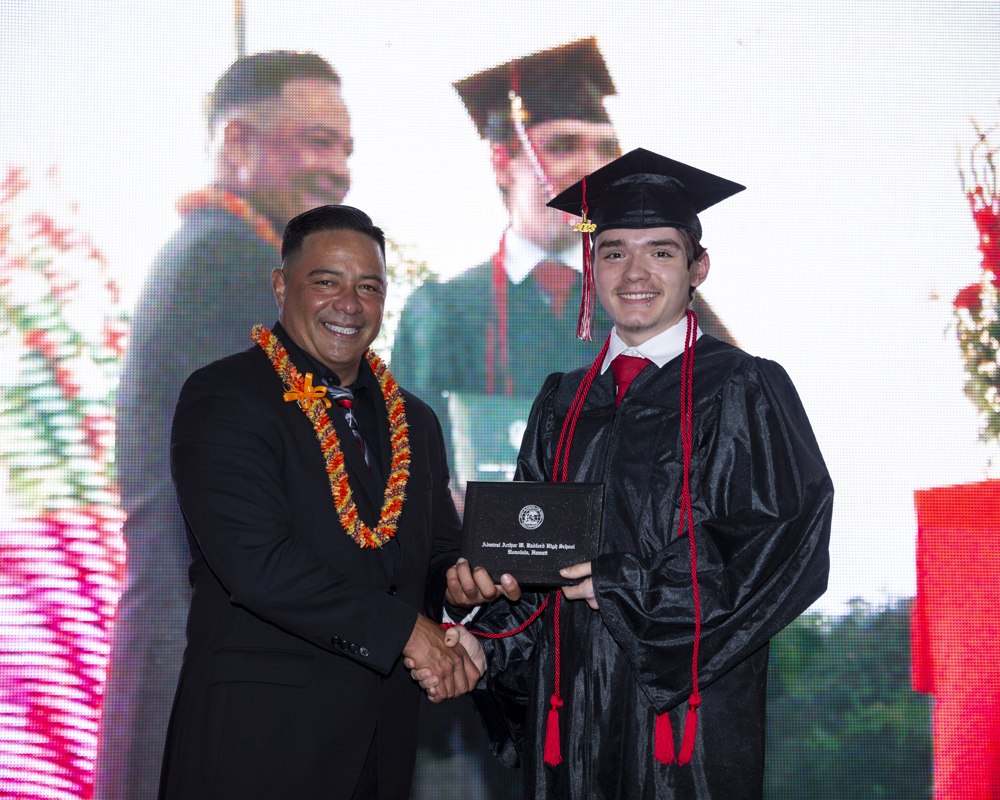
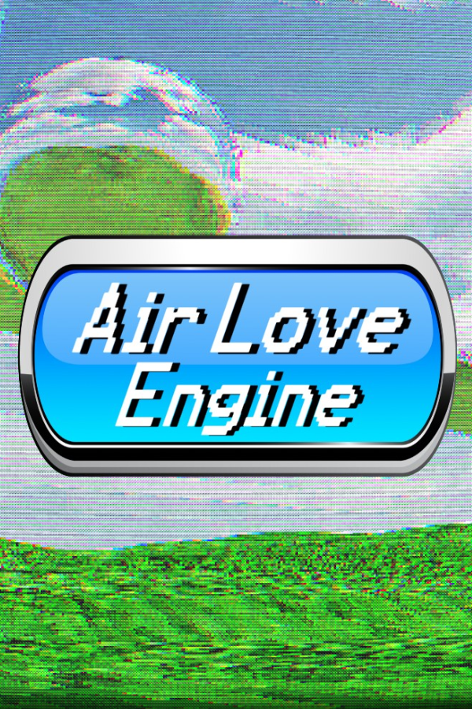

Here's me, little Brecken Edwards at 9 years old hoping to become a game developer someday. Little did he know that one day that dream would come true.

On May 23rd, 2023, I graduated from Admiral Arthur W. Radford High School in Honolulu, Hawaii. Around 4 months after my
graduation I decided to go to college and went to the University of Maryland Global Campus to major in computer studies, and upon selecting my electives I chose to pursue a game design class that taught me the basics of the Unity game engine and the C# programming language.
This small project known as "Free Run" originally that I was developing within that game design class was coming together as a PS1-inspired parkour game. However with many revisions later
I decided to land on the name "AirLoveEngine" and changed the game's core concept to a platformer based off my own dreams.

As of the present day, AirLoveEngine has recieved many updates including VR support and an unoffical physical copy! I am very thankful for my friends
and family who have encouraged me and supported my dream of releasing my very first video game. AirLoveEngine will never be perfect, nor do I ever
expect it to blow up and make me popular or rich. But what making this game did acheive was making my inner child happy, I did it for him and will
continue making more games with many more stories to tell in the future.